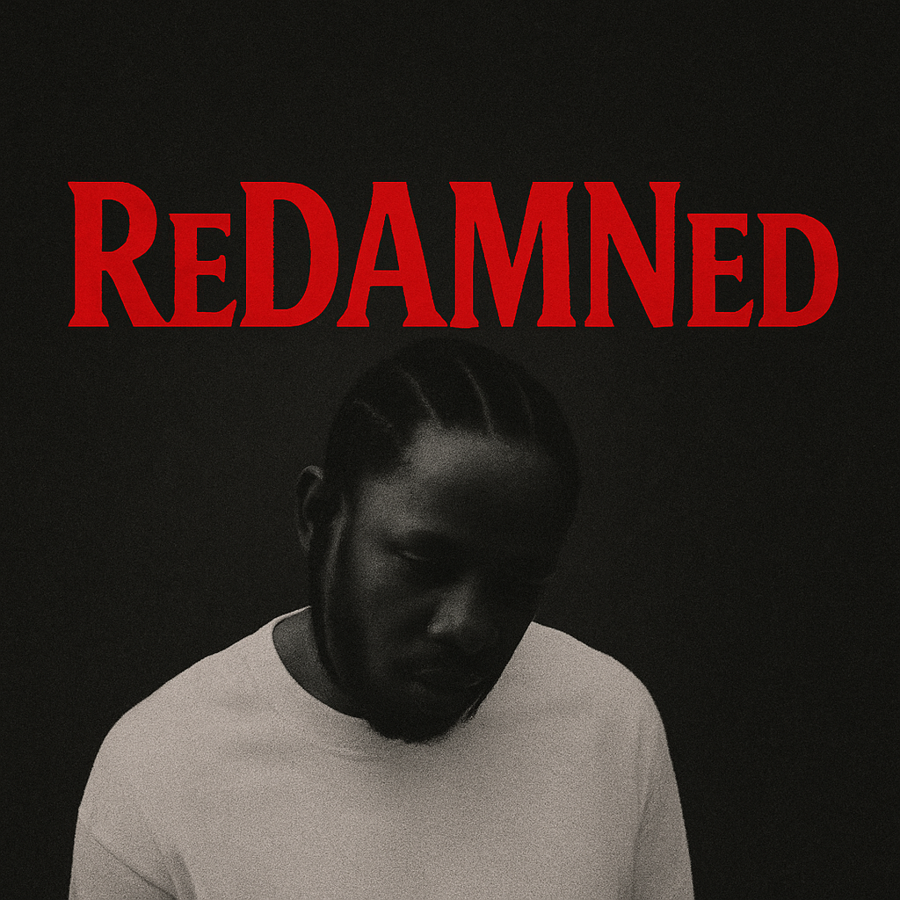

Kendrick Lamar – ReDAMNed
ReDAMNed is a full-length remix project reimagining Kendrick Lamar’s DAMN. through a new sonic lens. Every track has been deconstructed, rebuilt, and flipped with fresh production while preserving the raw emotion and storytelling that made the original a classic.

- BLOOD. (ReDAMNed)
- DNA. (ReDAMNed)
- YAH. (ReDAMNed)
- ELEMENT. (ReDAMNed)
- FEEL. (ReDAMNed)
- LOYALTY. ft. Rihanna (ReDAMNed)
- PRIDE. (ReDAMNed)
- HUMBLE. (ReDAMNed)
- LUST. (ReDAMNed)
- LOVE. ft. Zacari (ReDAMNed)
- XXX. ft. U2 (ReDAMNed)
- FEAR. (ReDAMNed)
- GOD. (ReDAMNed)
- DUCKWORTH. (ReDAMNed)